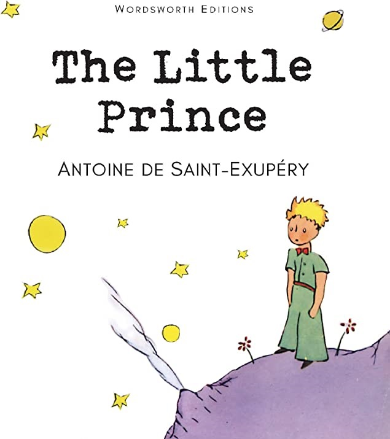

 "The Little Prince" by Antoine de Saint-Exupéry is a beautifully-written and philosophical novella that will leave readers feeling both melancholic and inspired. The story follows a pilot who crash lands in the Sahara desert and meets a young prince from a distant planet. Through their conversations, the prince shares his insights on life, love, and the human condition, leaving the pilot with a newfound understanding of the world around him.
The book is filled with memorable quotes and thought-provoking moments that will stay with readers long after they finish reading. The illustrations, also done by Saint-Exupéry, are equally captivating and add to the overall charm of the book.
"The Little Prince" is not just a children's book, but a timeless classic that can be enjoyed by readers of all ages. It is a must-read for anyone who appreciates a good story with a deeper meaning. If you haven't read it yet, do yourself a favor and pick up a copy today. It's a book that you'll want to keep on your bookshelf for years to come.